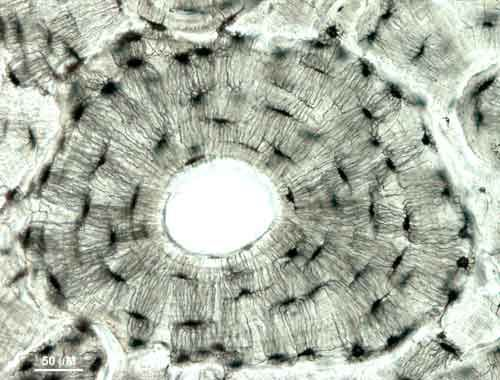

Kaulaudi ir cieti audi, ko veido kaulaudu šūnas (osteocīti) un šūnstarpu viela.
Kaulaudu šūnstarpu viela sastāv no kolagēnšķiedrām un amorfās vielas.
Kaulaudu šūnas atrodas šūnstarpu vielas dobumos, bet to izaugumi stiepjas pa šūnstarpu vielas kanāliem; pa tiem notiek arī kaulaudu vairošanās.
